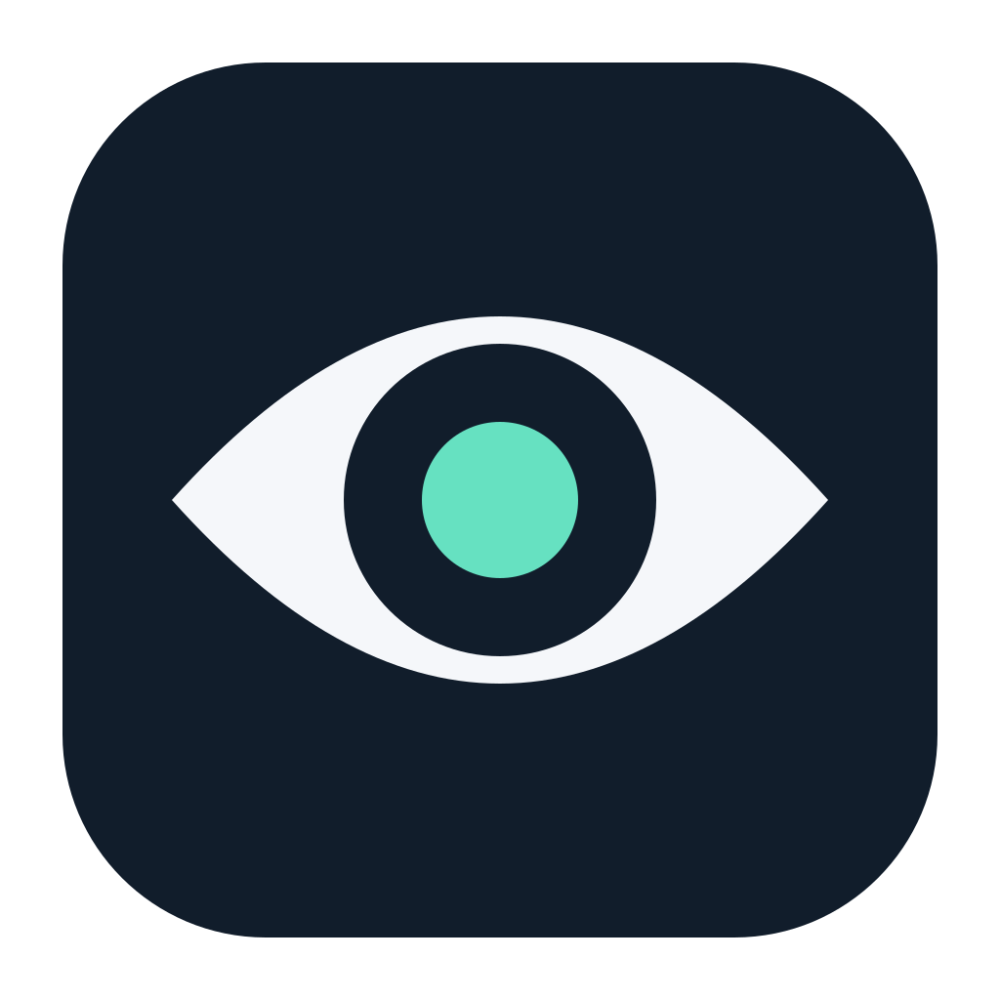
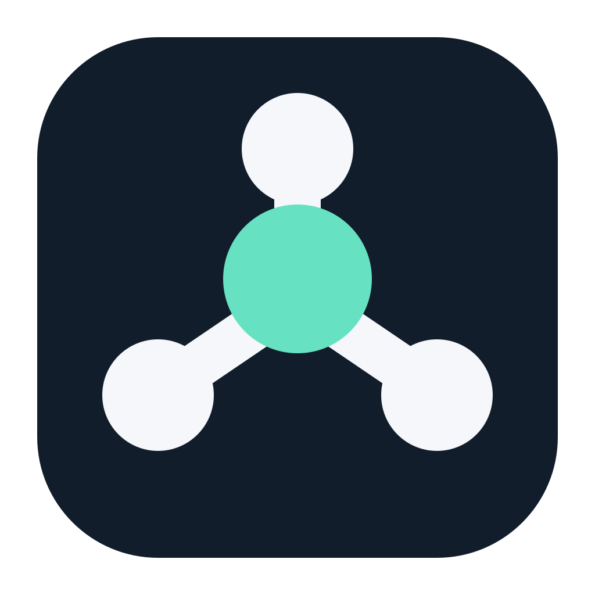
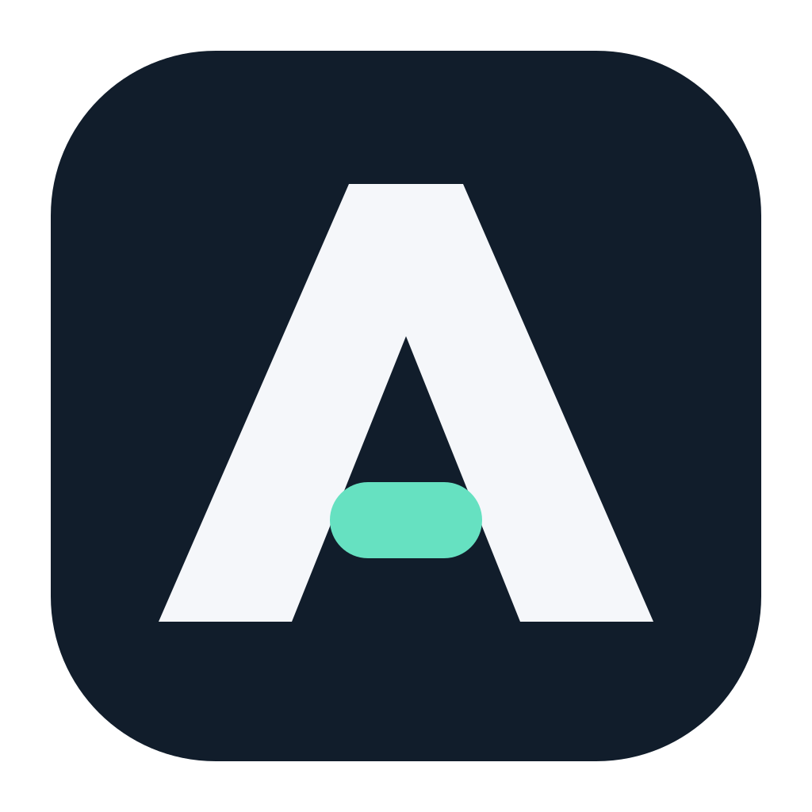
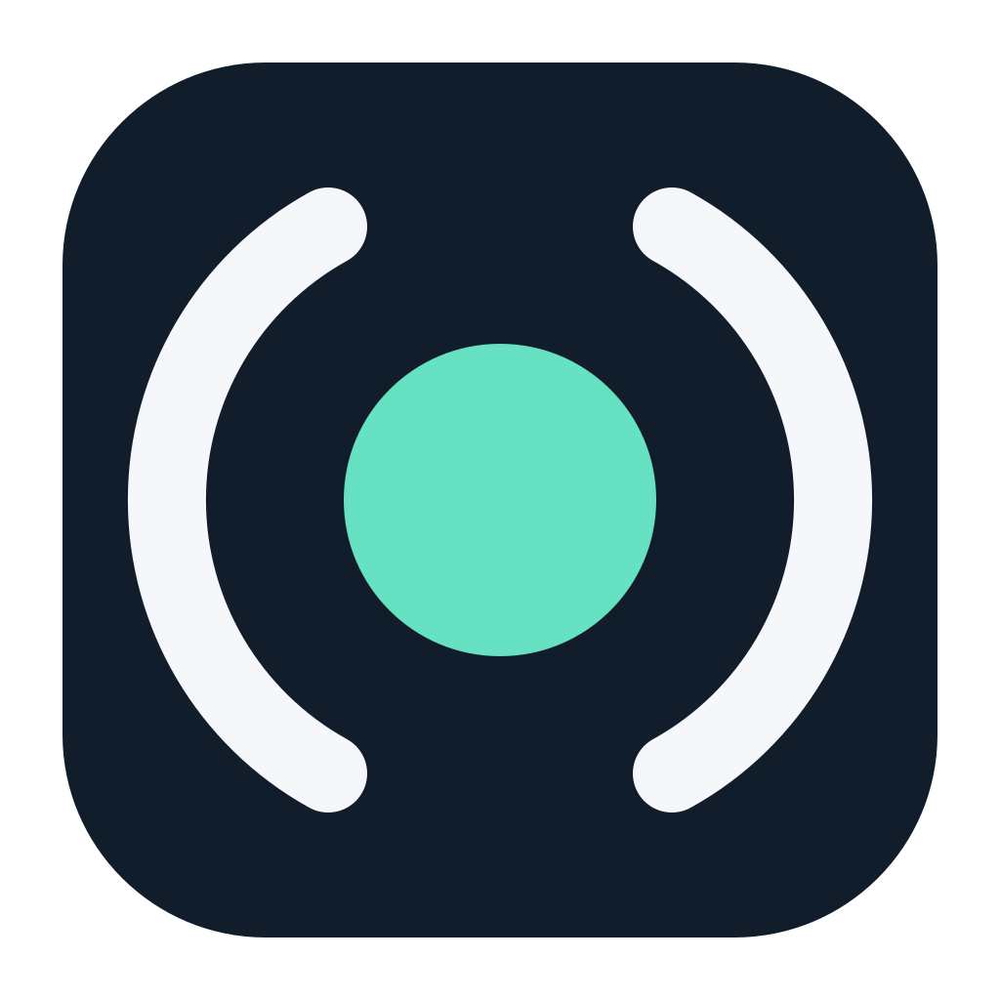
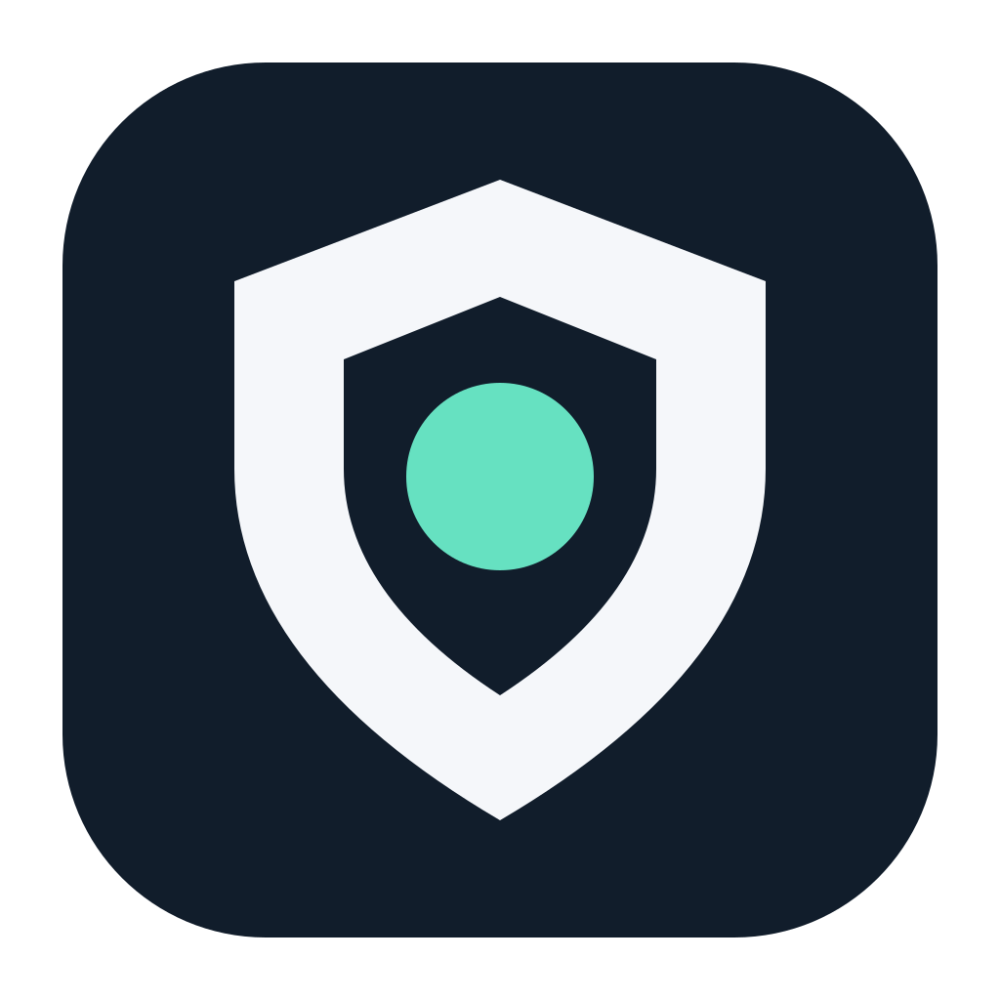

Des formes simples, deux couleurs, aucun effet. Compare leur lisibilité à petite taille.

Le regard d’Argos. Direct et reconnaissable.

Un centre qui coordonne ses agents.

Un A compact, au dessin géométrique.

Un assistant présent, toujours au centre.

Un signe de vigilance et de confiance.